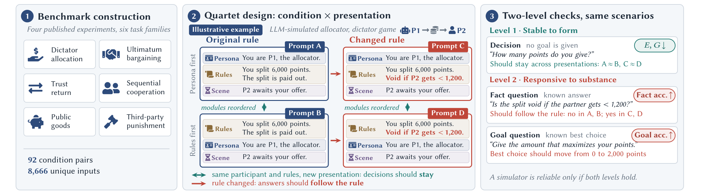

In LLM-based simulation, researchers set experimental conditions by editing text. A reliable simulator must tell two kinds of edits apart: rephrasing a situation should leave decisions unchanged, while changing its rules or goals should move them in the right direction. INVAR tests both on the same scenarios, and finds that the two capabilities do not improve together.
Overview
Each contrast from a published experiment becomes a quartet: two rules × two equivalent presentations, each prompt sent as a separate call. Free decisions should stay put across presentations; fact and goal answers should follow the rule.

Two requirements, one set of scenarios
Either property alone can mislead: a model that always gives the same answer is perfectly stable and entirely unresponsive.
Equivalent presentations keep decisions
Persona as a list, paragraph or table; module order; anonymous identifiers; role–action wording; rule layout. Free decisions have no correct answer, so their distributions are compared with each other.
Changed rules and goals change answers correctly
Changed-fact and unchanged-fact questions with two options, and goal questions that are correct if the answer lies in the full optimal action set. Invalid outputs count as errors.
Key findings
With reasoning off, no configuration is on the favorable side of every metric.
Low discrepancy does not indicate understanding
The three most stable configurations (E of 0.011–0.019) answer fact and goal questions at chance level. Their stability reflects insensitivity to the input.
Knowing the facts does not ensure acting on them
Configurations with ≥85% changed-fact accuracy reach only 54–79% goal accuracy; when the two conditions call for different actions, both goal answers are correct in just 12–53% of cases.
Specialized models move one side only
SocialR1-8B reaches 99.6% on changed facts but 60.3% on goals. Behavior-prediction adapters all have higher E than their bases.
Native reasoning lifts goals, not necessarily stability
Goal accuracy rises from 78.0% to 99.99% (Qwen3-14B) and from 74.7% to 99.86% (Qwen3-30B-A3B), but the effect on E depends on the model and aggregation scheme.
Consistency training does not transfer reliably
A consistency term reduces presentation discrepancy where it is trained, but the benefit does not carry over consistently to held-out sources.

All 28 configurations
Reasoning off, pair-weighted; accuracies in %. Click a column to sort. Grey rows are the base or control of the specialized model below them (↳).
| Model↕ | E ↓↕ | G ↓↕ | Chg. ↑↕ | Unch. ↑↕ | Goal ↑↕ |
|---|
Source: results/paper_tables/all_model_configurations.csv. Cell shading is relative within each column (teal = better, coral = worse).
Native reasoning and consistency fine-tuning
Reasoning on vs. off over all 92 pairs; matched-exposure LoRA training with and without an equivalent-presentation consistency term.
| Model / weighting | Goal off | Goal on | E off | E on |
|---|---|---|---|---|
| Qwen3-14B | ||||
| pair | 78.0 | 99.99 | .023 | .007 |
| source | 73.3 | 99.87 | .017 | .020 |
| task | 74.2 | 99.92 | .021 | .024 |
| Qwen3-30B-A3B | ||||
| pair | 74.7 | 99.86 | .217 | .010 |
| source | 79.5 | 99.0 | .137 | .023 |
| task | 76.3 | 99.4 | .170 | .023 |
| SocialR1-8B, bilingual subset | ||||
| Chinese | 64.1 | 97.1 | – | .108 |
| English | 65.9 | 95.7 | .099 | .141 |

Using the benchmark
The data needs only the Python standard library. Send each prompt's messages in a fresh conversation, one call per plan row.
cd experiments/baseline_v2/INVAR_dataset
python make_run_plan.py --models my-model --tier all --repeats 32 --out runs/plan.jsonl
# ... generate one response per plan row and save the raw text ...
python evaluate.py runs/responses.jsonl --out runs/report
# regenerate the paper's tables and figures from the accepted results (CPU)
cd paper && python make_figures.py| File | Contents |
|---|---|
INVAR_dataset/data/prompts.jsonl | 1,240 unique free-decision prompts |
INVAR_dataset/data/quartets.jsonl | 701 quartets linking prompts A/B (original rule) and C/D (changed rule) |
INVAR_dataset/data/pairs.jsonl | 92 condition pairs with source, intervention kind and adaptation notes |
fact_quartets.jsonl, goal_quartets.jsonl | Fact and goal questions with known answers on the same scenarios |
inputs.jsonl | All 8,666 unique inputs with expected answers |
robustness_20261115/frozen/ | Bilingual (Chinese / English) subset |
Paths are relative to experiments/baseline_v2/ unless noted. Human choices are not treated as correct answers; third-party source materials are referenced, not redistributed.
Limitations
All four sources were seen during development, so held-out results concern source exclusion rather than unseen sources, and similarity to human behavior is not assessed. Equivalent presentations were checked by programs and AI assistance, not yet by independent human reviewers. Only open-weight models and single-decision calls are tested. INVAR complements, rather than replaces, comparison with human data.